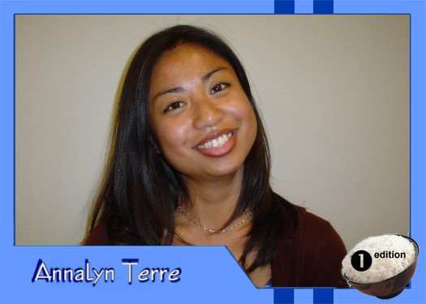

|
Why did you get involved with Theatre Rice? I love self _expression! And since I can't sing, write GOOD poetry or make anything with my two hands, I find myself deeply involved in displaying my many idiocentric personalities. What do you hope to gain from TR? More than anything, I really want to be a part of a very positive and close - knit Asian American community. Who are your role models? There are so many people that I admire and only one person who really inspires me in everything I do, and that's my mama. She is just a strong, amazing and beautiful pinay that cannot be compared to anyone (corny - I know). What do you like to do in your spare time? In my spare time I love to PAArty (Hang out with my PAAmily), eat my mom's cooking, and sleep. If you had a quote that defines how you live life, what would it be? May the bird of paradise lay an egg in your coffee" - This quote, like me, sounds weird and funny - only because it doesn't make any sense. |